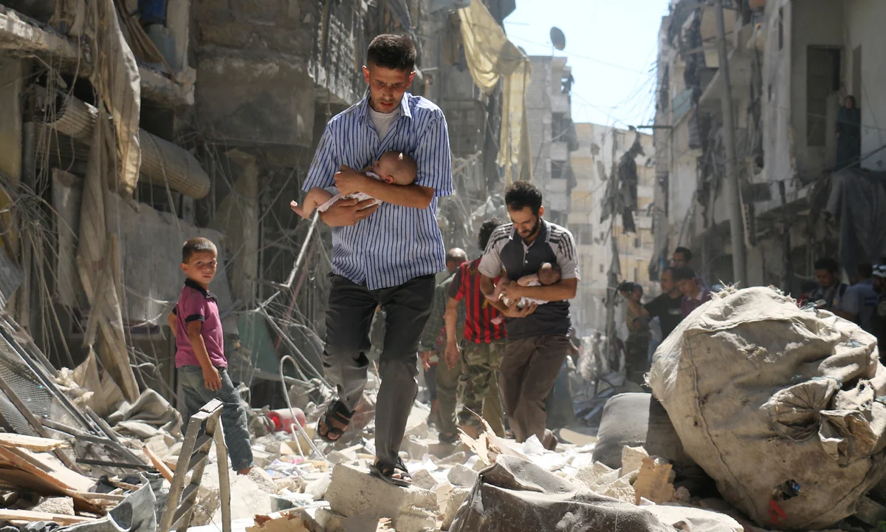
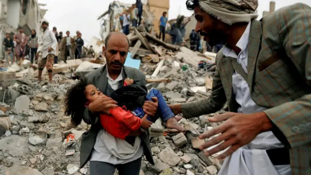

Em um mundo que avança tecnologicamente a passos largos, ainda enfrentamos um dos mais antigos e cruéis flagelos da humanidade: a guerra. Conflitos armados continuam a devastar países e, principalmente, a destruir vidas. Mais do que disputas políticas ou territoriais, essas guerras deixam um rastro profundo de sofrimento entre os civis — homens, mulheres e crianças que se veem forçados a fugir, a sobreviver sem recursos e a lidar com traumas físicos e emocionais irreversíveis.
Na Síria, mais de uma década de guerra civil já resultou em centenas de milhares de mortes e milhões de deslocados. Famílias inteiras vivem em campos de refugiados ou em ruínas, lutando para encontrar comida, água potável e abrigo. No Iêmen, o que começou como uma disputa política evoluiu para uma das maiores crises humanitárias do mundo, com uma população ameaçada pela fome e por epidemias em meio ao colapso do sistema de saúde.
O conflito entre Armênia e Azerbaijão na região de Nagorno-Karabakh tem causado deslocamentos forçados e destruição de comunidades, enquanto em Israel e na Palestina, a escalada de violência gera perdas civis inaceitáveis de ambos os lados, alimentando um ciclo doloroso de medo e vingança. Já na Ucrânia, a guerra iniciada em 2022 ainda deixa cidades em ruínas, crianças fora das escolas e milhões de pessoas tentando reconstruir suas vidas longe de casa.
Diante de tanto sofrimento, é fácil sentir-se impotente. Mas há algo que todos podemos fazer: doar. A doação — seja em dinheiro, mantimentos ou tempo — representa mais do que ajuda prática: ela é um gesto de humanidade, uma forma de estender a mão para aqueles que perderam tudo. Organizações humanitárias sérias e comprometidas atuam nesses países para oferecer alimentos, cuidados médicos, abrigo e apoio psicológico, e dependem da solidariedade internacional para continuar esse trabalho.
Não podemos encerrar guerras sozinhos, mas podemos ser parte da resposta que alivia a dor das vítimas. Em tempos em que o sofrimento alheio é constante e visível, a empatia e a ação concreta são as formas mais poderosas de resistência ao caos. Doar é, acima de tudo, afirmar que cada vida importa.
| Sobre o COD: | Sobre Nós: | Contate-nos: |
|---|---|---|
| ©CallofDonation | Criado por: | Callofdonation@gmail.com |
| é um site de arrecadação de | Artur Oliveira | |
| fundos para vítimas de guerra | Andrey Tavares | |
| Éric Alves | ||
| Gabriel Ferreira |